Nodes are key turning points in the market that mark the highs and lows of trends. After each node forms, the market will correct in the opposite direction of its main move, and that correction itself is made up of internal nodes. Every market move runs from one node to the next, so understanding what they are and how they behave is what gives you a real grasp of market movement. A trend is usually built from 3 nodes, and the corrections inside each trend are usually built from 2 nodes.
The image below shows a schematic of bullish and bearish nodes. Each node is made up of 3 main parts plus one overall correction.
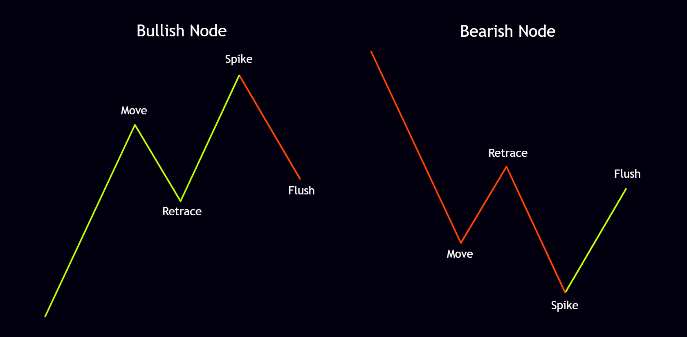
- Part 1: Move – the market’s main directional move
- Part 2: Retrace – the limited correction
- Part 3: Spike – the sharp market move
- Part 4: Flush – the overall correction that closes the node
Node Anatomy
As already mentioned, every node consists of 4 parts. The Move (the market’s main directional move) usually contains 2 internal nodes. The Retrace (limited correction) can complete with either 2 or 3 nodes. The Spike (sharp market move) completes with 3 internal nodes. The Flush (overall correction that closes the node) can also complete with either 2 or 3 nodes. In the image below you can see the full anatomy of both bullish and bearish nodes.
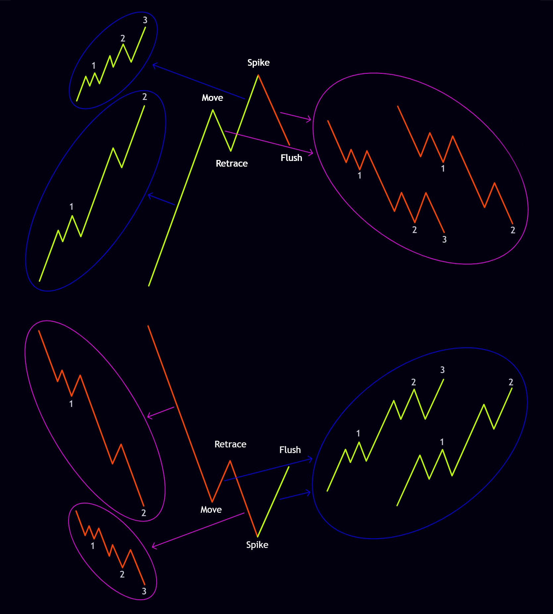
The Philosophy of Nodes
When the market is in a bullish or bearish Move and reaches important levels such as support or resistance, a large number of sellers (in uptrends) or buyers (in downtrends) come in against the direction, looking for a reversal. At that point the market enters a Retrace. After a while it snaps back into its main trend with a sharp move we call the Spike, forcing all those sellers (in an uptrend) or buyers (in a downtrend) to stop out. Then, because the high or low has been broken, breakout traders jump in, and the market’s Flush forces them to stop out as well.

This philosophy is really a combination of crowd psychology and the mechanics of liquidity. The market is always hunting liquidity. When a large group of traders is positioned on one side, the market tends to force them out so it can take the liquidity it needs to continue. The Spike does exactly that: it hunts the stops of the opposing side and at the same time traps the breakout traders. Understanding this cycle helps a trader stop reacting emotionally to sharp moves and instead see them as a natural part of market structure.
As mentioned earlier, the market usually completes its moves with either 3 or 2 nodes. These are labeled Node 1, Node 2, and Node 3, and later in the material they are simply referred to as 1, 2, and 3. Every node can take one of three different shapes, depending on the type of market move and how volume is distributed. To understand these three shapes properly, we first need the concept of Pending 1-2s.
Pending 1-2s
According to fractal rules, every node is itself made of 3 smaller nodes, so each node contains two internal 1-2s that will either stay open or close depending on the node’s shape. 1-2s are the intersection points between the previous node’s correction and the start of a new node, and they carry major importance in the market. For example, when Node 1 finishes and reaches its Flush stage, the end of that Flush and the start of the new Node 2 is called a Pending 1-2. These points behave like magnets; after a trend completes, the market will usually correct at least as far as its first Pending 1-2. The schematic below shows bullish and bearish nodes together with their internal 1-2s.
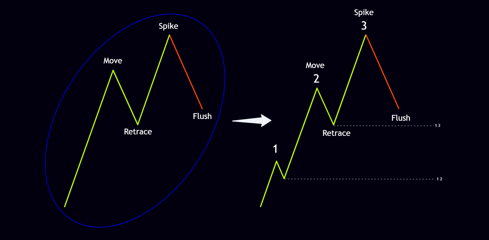
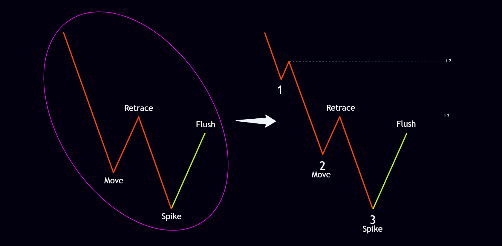
Different Node Shapes
Depending on whether its internal 1-2s stay open or close, a node can form in three different ways:
Completed node that leaves all of its 1-2s open:
When the three internal nodes finish and form the main node, the market must at least correct back into the Cycle Evolution Zone of the third internal node. The Cycle Evolution Zone is the area at the very beginning of a node; it will be explained in detail in the cycles section. In this shape, none of the internal 1-2s close. As you can see in the image below, the completed node corrects into the Cycle Evolution Zone of its third internal node and then continues its bullish or bearish move. This shape usually appears as Node 1.
This type of node signals strong trend power. When the market refuses to close even one of the internal 1-2s after the node is complete, it means trend pressure is still very high and the corrections stay at the level of the internal 1-2s of Node 3. In that situation, expecting the move to continue in the original direction is more logical than expecting a full reversal.
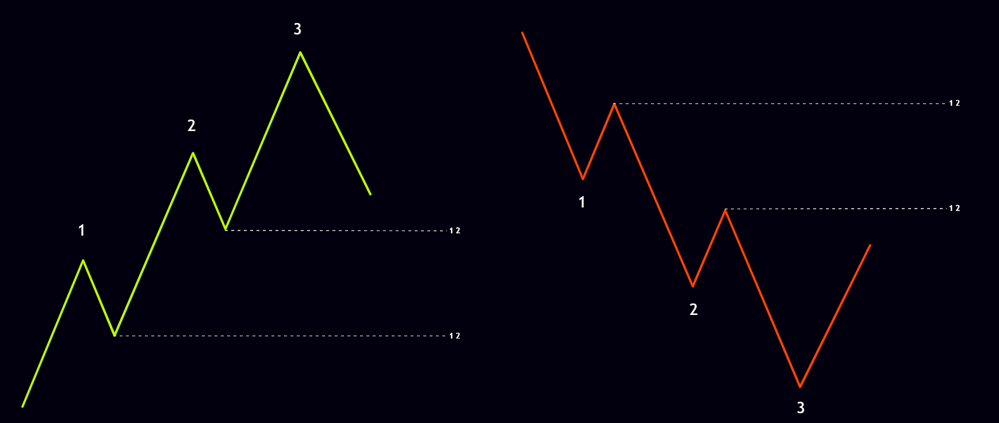
Completed node that closes its first Pending 1-2:
The second shape occurs when, after the three internal nodes form, the main node’s correction closes the first internal 1-2. As shown in the image below, the completed node corrects into the Cycle Evolution Zone of its second internal node and then resumes its bullish or bearish move. This shape usually appears as Node 2.
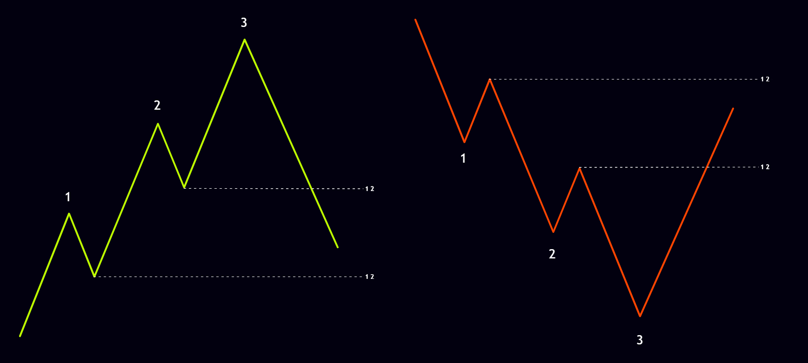
Completed spike-style 1-2-3 node that closes all of its Pending 1-2s:
In some cases, especially at the beginning or end of trends, the market moves in a spike and forms Node 1 or Node 3 the way shown in the image below. After the node completes, the market closes every Pending 1-2. This type of node is often seen at points of peak market emotion. Sharp moves without deep corrections usually signal either the end of a trend or the start of a new one.
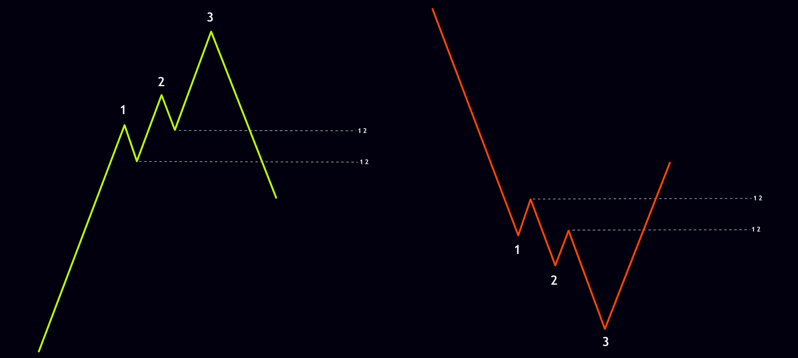
Completed node that closes all of its Pending 1-2s:
This state is called a full cycle and will be covered in detail in the cycles section.
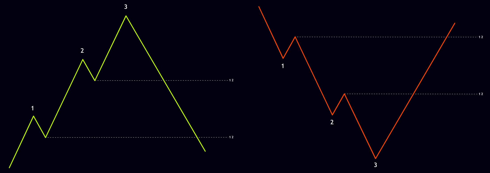
Internal and Main Trend 1-2s
Above we looked at the internal 1-2s of each node; now we examine the main 1-2s of a trend. As already stated, a market trend is usually built from 3 nodes. Therefore the intersection points between each node’s Flush and the start of the next node form the main 1-2s of the trend. The internal and main 1-2s in bullish and bearish trends look like this:
In bullish trends, after the main Node 3 completes, the market’s correction usually continues until the last Pending internal 1-2 of Node 3 is closed. Closing the first (highest) internal 1-2 of Node 3 can be treated as a 100% event. When a Pending 1-2 closes, the market will usually travel near the beginning of the node—the Cycle Evolution Zone. In the image below you can see the market completing its bullish trend with 3 main nodes; by fractal rules each of those nodes is itself made of 3 internal nodes. The main 1-2s of the bullish trend are marked in turquoise and the internal 1-2s of the main nodes are marked in white.
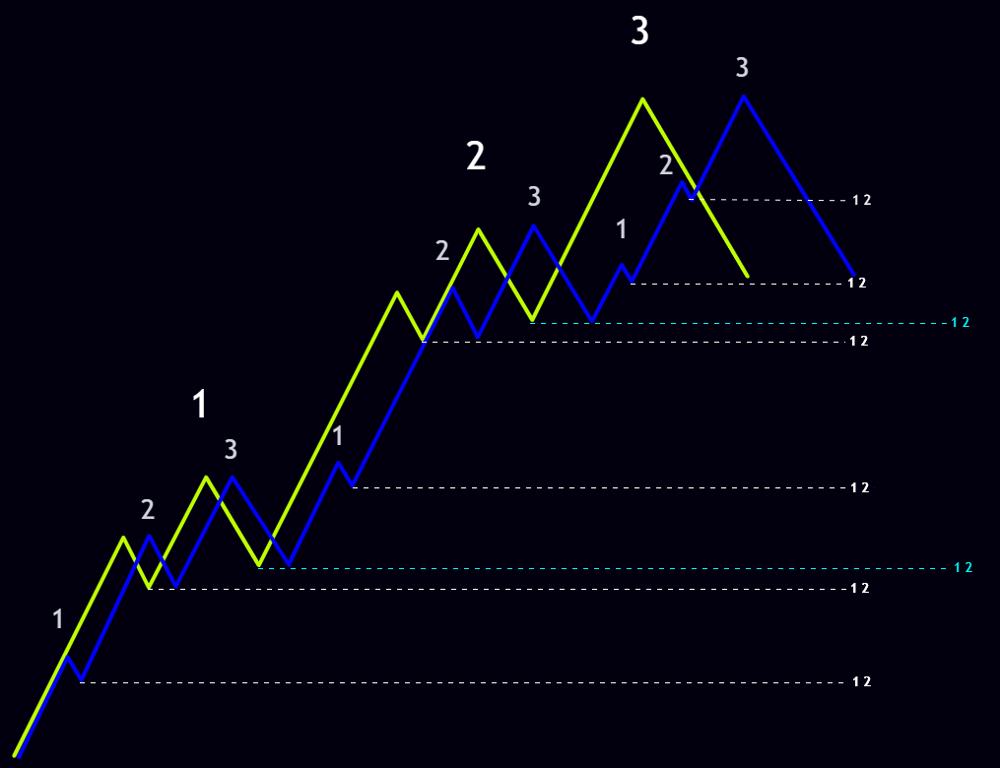
In bearish trends the sequence is exactly the same. After the main Node 3 completes, the market’s correction usually continues until the last Pending internal 1-2 of Node 3 is closed. Closing the first (lowest) internal 1-2 of Node 3 can be treated as a 100% event. When a Pending 1-2 closes, the market will usually travel near the beginning of the node—the Cycle Evolution Zone. In the image below you can see the market completing its bearish trend with 3 main nodes; by fractal rules each of those nodes is itself made of 3 internal nodes. The main 1-2s of the bearish trend are marked in turquoise and the internal 1-2s of the main nodes are marked in white.
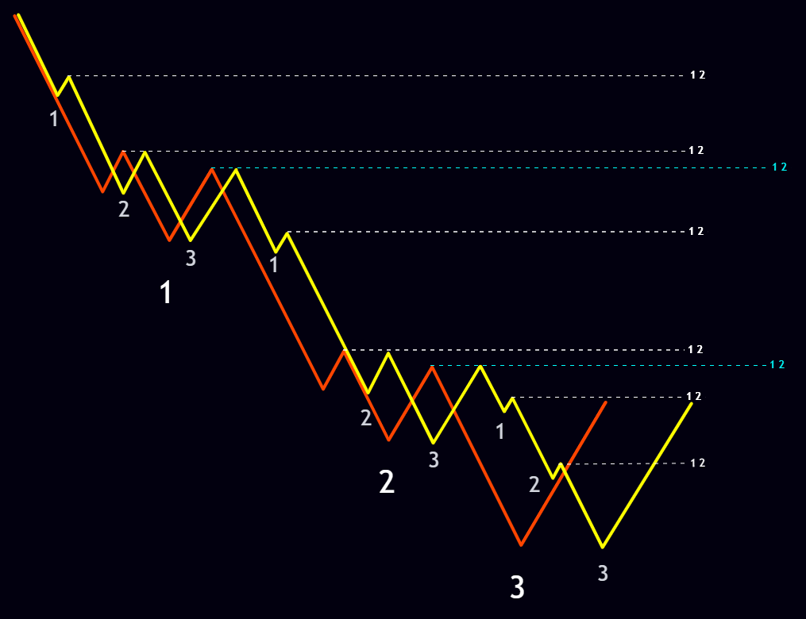
Anchor
Once three nodes are complete, three possibilities arise: the market fully reverses and the overall direction changes; the market corrects and the three completed nodes become a larger Node 1 while the market continues in the previous direction; or the market’s correction closes every Pending 1-2 of the three completed nodes and turns them into a cycle. In certain special cases something outside these three possibilities occurs: after Node 3 finishes and a shallow correction takes place, the market resumes its path. According to symmetry rules we would expect the market to travel at least the size of the newly formed larger Node 1, yet instead it only prints one new node and then reverses back below (in uptrends) or above (in downtrends) the end of Node 1’s Flush and the potential start of Node 2. This extra node is called an Anchor; in its minimum travel it will always close the main 1-2 of Node 3.
Anchors are rare, but when they form they act like magnets—no matter how far price corrects, it eventually has to take them out again. In essence they are market landmarks that price must later return to and move beyond. The schematics below show the various bullish and bearish Anchor forms.
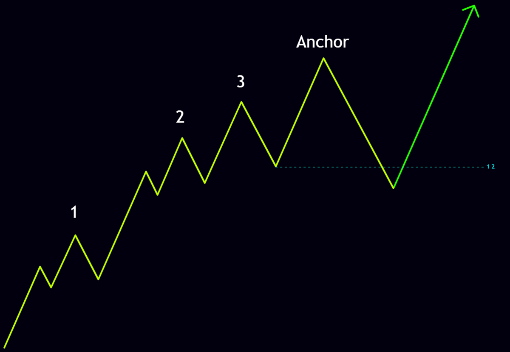
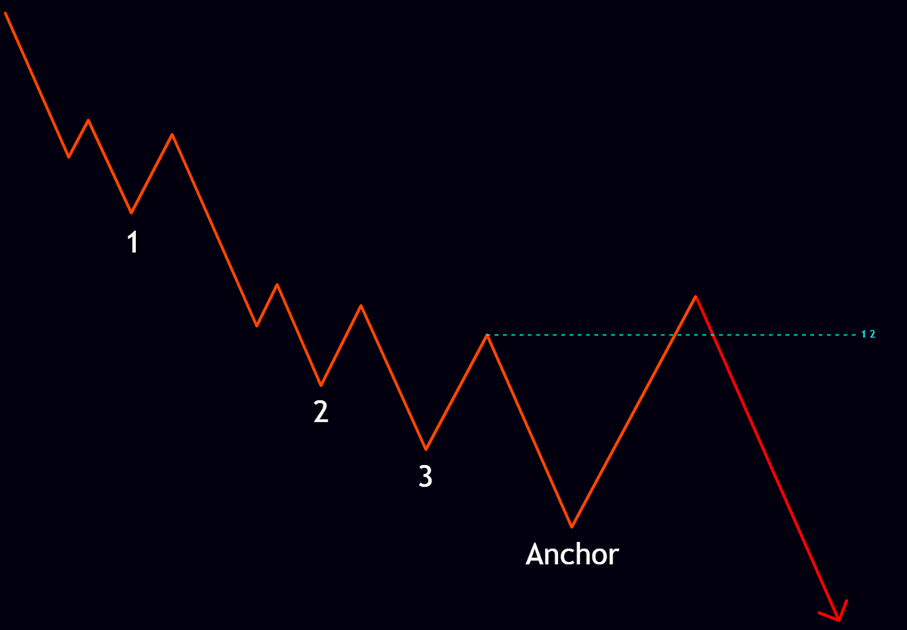
Node-Counting Rules
Now that we have the basic concepts and overall structure of nodes, it is time to lay out the correct, principled rules for counting them. This section is one of the most important and practical parts of the material, because without clear counting rules it is practically impossible—or extremely error-prone—to read market structure.
Up to this point, for easier understanding, every schematic was drawn in a one-dimensional way: we assumed the market only moved in one direction and the left side of the chart was empty. Reality is completely different. The market does not move in one dimension; in most cases (except at all-time highs) there is always left-side structure relative to the current price. Counting therefore has to include both the live price dimension and the historical dimension. In other words, you must look at the open structures on the left and the live movement on the right at the same time. These two dimensions combine to give a fuller picture of the market. Look at the image below for clarity:
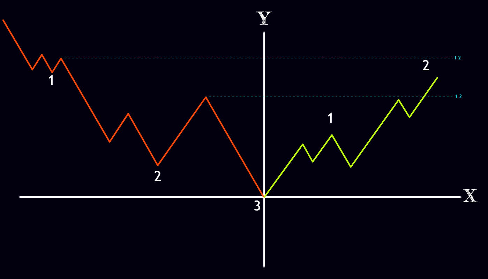
In the image above the market has already completed a 3-node bearish trend on the left side of the chart. We therefore expect at least a correction into the Cycle Evolution Zone of the bearish Node 3. When we start counting the live trend on the right, we first use the Pending 1-2s still open on the left as our reference. Once the first Pending 1-2 on the left closes, the market will usually continue near the next Pending 1-2 (the Cycle Evolution Zone itself). If that next Pending 1-2 also closes, we effectively have a full cycle.
Many new traders only look at the right side of the chart and ignore the left-side structures. The left side is often the key to understanding the next market move. Always count the left side carefully before counting the live market.
Counting Node 1
Node 1, like every other node, is made of 3 internal nodes and can take any of the three node shapes already described—the standard form (all 1-2s open), the form that closes the first 1-2, or the spike 1-2-3 form. There is, however, a simpler practical way to identify Node 1.
Because Node 1 usually leaves all of its internal Pending 1-2s open, you can often recognize it simply by its standard visual shape. In other words, after Node 1 completes you rarely see a deep correction.
Look at the image below. On the left schematic the market, after finishing a bullish Node 3 on the left, starts moving and forms a standard node shape—so the bearish Node 1 is immediately clear. On the right schematic the same logic applies: after finishing a bearish Node 3 on the left, the market forms a standard node shape and the bullish Node 1 is just as easy to spot.
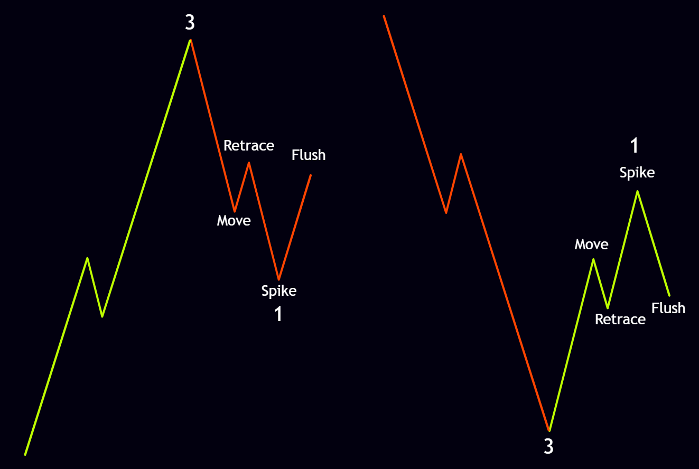
We said Node 1 usually leaves its internal Pending 1-2s open, but that does not mean it always does. The market does not always follow ideal patterns. Node 1 can take any of the node shapes. The images below show the various forms of bullish and bearish Node 1.
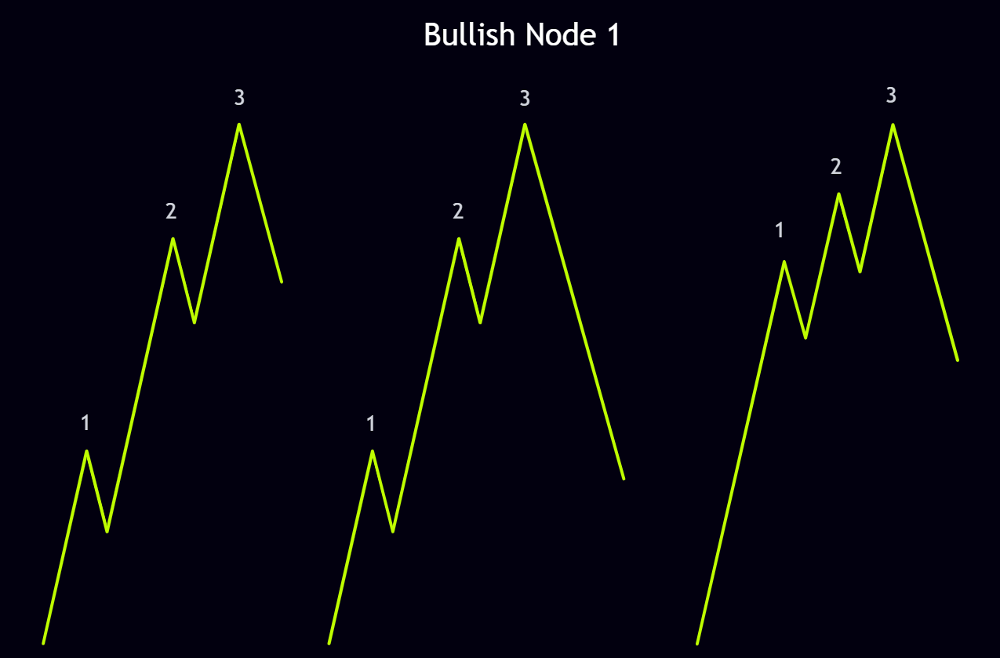
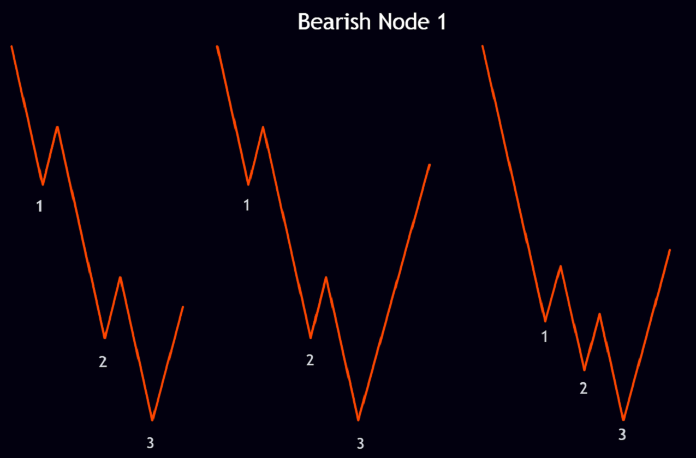
Counting Node 2
Node 2 is also made of 3 internal nodes and can take any of the three shapes. The correct way to count and identify it, however, is based on symmetry rules. According to those rules, Node 2 must be equal to or larger than Node 1, so we can use that to find the minimum size Node 2 should travel. The process is:
- After Node 1 finishes, start counting and locate the internal Node 1 – Node 2 the same way described earlier.
- Then, by symmetry, the internal Node 2 must be equal to or larger than the internal Node 1; for extra confirmation you can drop one level lower and also count the three internal nodes of that internal Node 2.
- Finally, after the internal Node 2 corrects, look for the internal Node 3. In most cases the internal Node 3 will close all of its own internal Pending 1-2s.
This layered process helps you identify Node 2 correctly. The more thoroughly you count the internal nodes and confirm that symmetry holds inside them, the higher the probability that the overall Node 2 count is right.
Look at the images below for clarity. On the left you see a bullish Node 1 and Node 2 confirmed by symmetry and by counting its internal nodes. The right image shows the bearish version.
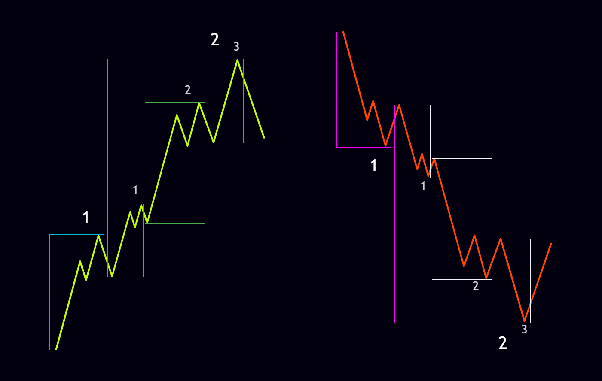
As already noted, Node 2 can take any of the three shapes, but it most often forms as one of the first two (all 1-2s open or first 1-2 closed). The spike 1-2-3 form is different on Node 2 and usually appears as a spike 1-2-3 together with an Anchor.
The images below show the various forms of bullish and bearish Node 2.
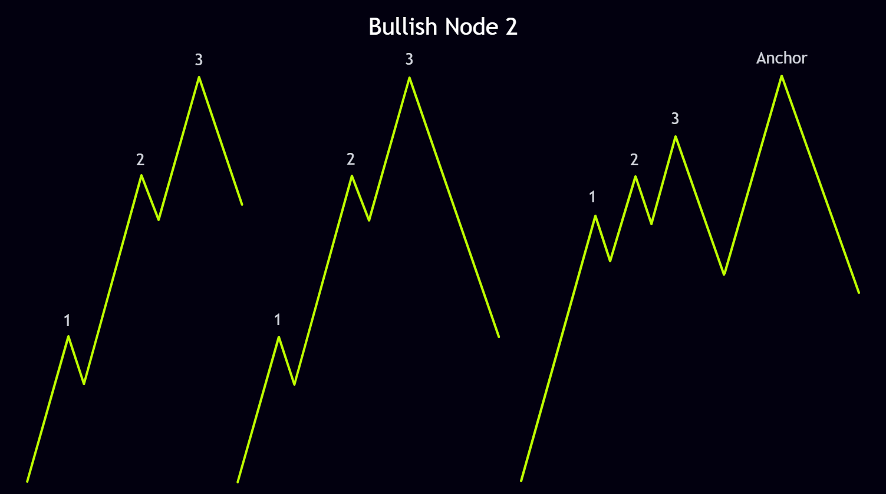
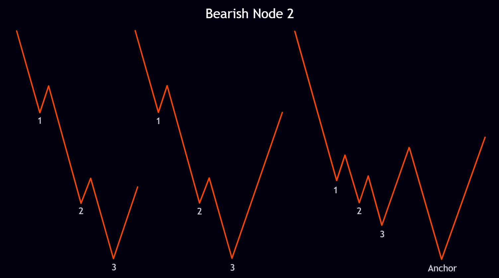
Counting Node 3
Node 3 is also made of 3 internal nodes, but it must close at least one of its internal Pending 1-2s. The various bullish and bearish shapes of Node 3 therefore look like this:
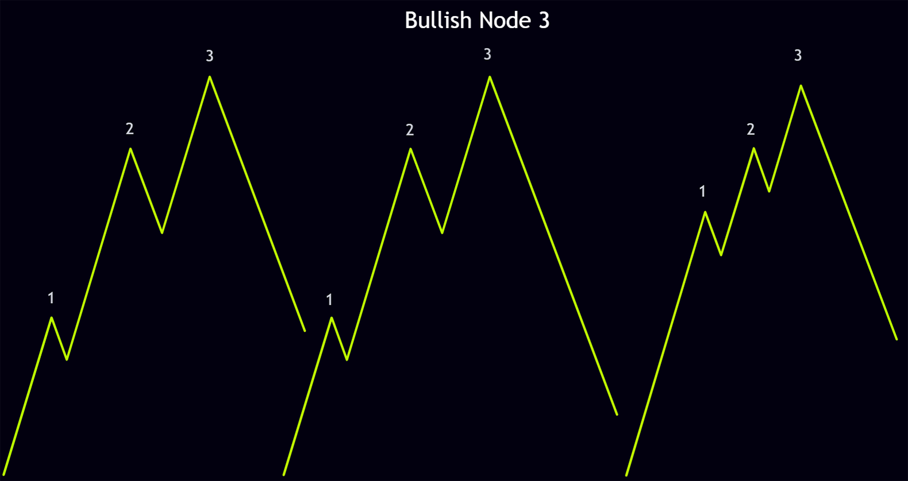
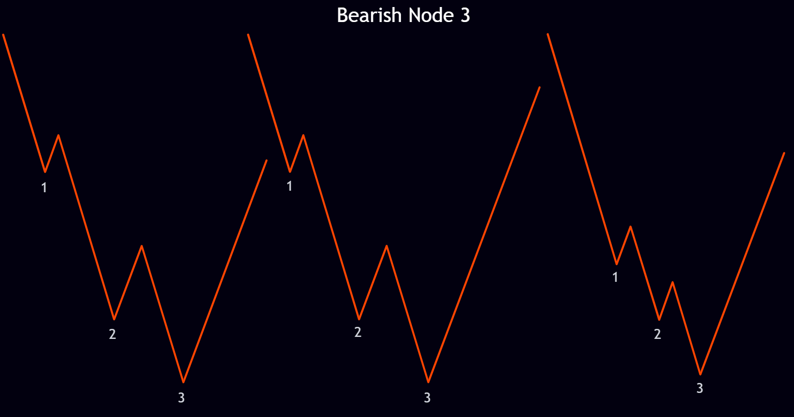
Node 3 usually forms as a spike 1-2-3, though in some cases it forms as a standard node shape; when it does, the Flush of its internal Node 2 is usually deep. The bullish and bearish schematics are shown below.


Additional Node-Counting Notes
All the node shapes described so far are the market’s standard patterns. They repeat in most cases and across different timeframes. Because of uneven liquidity distribution, however, market behavior can sometimes become more complex. Unbalanced volume can stretch one node too far or shorten another. Below we examine a few of these special cases.
Attach of Node 2 to Node 1
When the correction of Node 2 closes all of its internal Pending 1-2s, that node effectively becomes a full cycle. In the standard case we expect the next high or low to be Node 3, but two possibilities can occur:
- In the first case the high or low is correctly Node 3 and counting proceeds in the normal way.
- In the second case the completed Node 2 attaches to the previous smaller Node 1 and together they form a larger Node 1. By symmetry rules the market must then travel at least the size of this new larger Node 1 before it can form Node 2, and only after that (if needed) will Node 3 appear.
Each of these two outcomes has roughly a 50–50 probability. Look at the images below to see both cases clearly.
The first image shows the standard case: after all internal 1-2s of Node 2 close, the next market move produces Node 3.
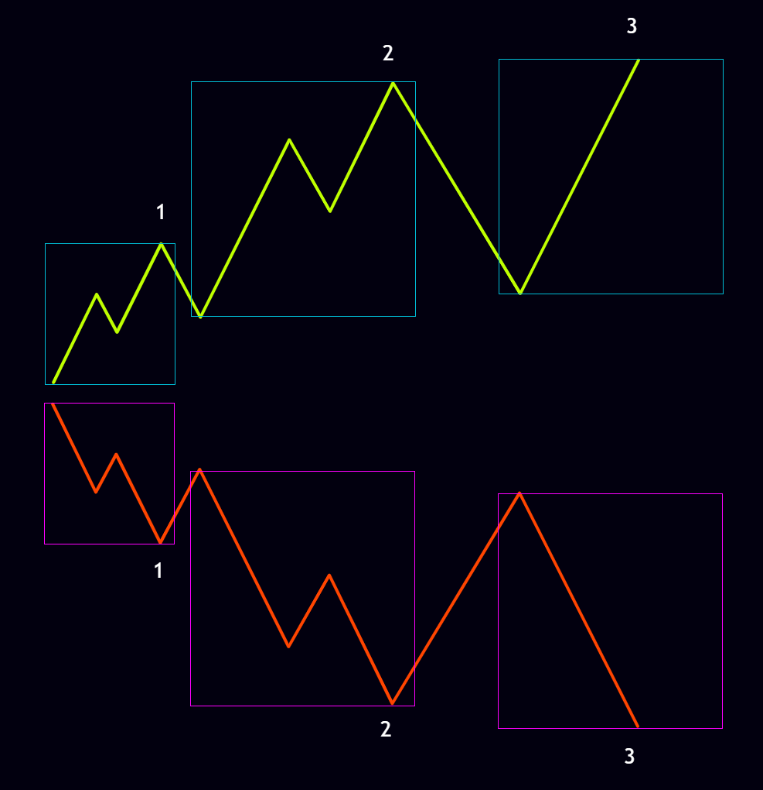
In the second case, as shown in the images, the Node 2 that has effectively become a closed cycle attaches to the previous smaller Node 1 and together they create a new larger Node 1.
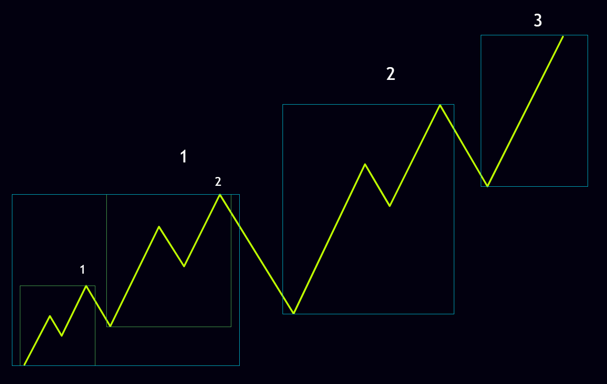
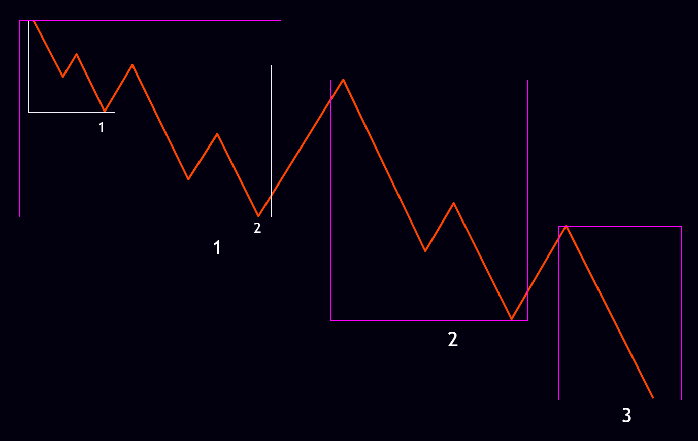
Anchor Becoming Node 3
As already explained, once three nodes finish, after a correction and continuation those three nodes become a larger Node 1. Sometimes, however, instead of forming a larger Node 2 the market prints a small node, reverses, and returns to the area of the larger Node 1. That small node is the Anchor we discussed earlier. As noted in that section, an Anchor acts like a magnet—whatever correction the market makes, it eventually has to take the Anchor out again. In that situation the count works as follows:
When the market takes out the Anchor, the three completed nodes plus the Anchor together form the larger Node 1. In effect Node 3 and the Anchor have attached to each other and the Anchor has become the new Node 3. After that, in the standard sequence, the market will form Node 2 and, if needed, Node 3. The images below show examples of Anchors in both bullish and bearish trends.
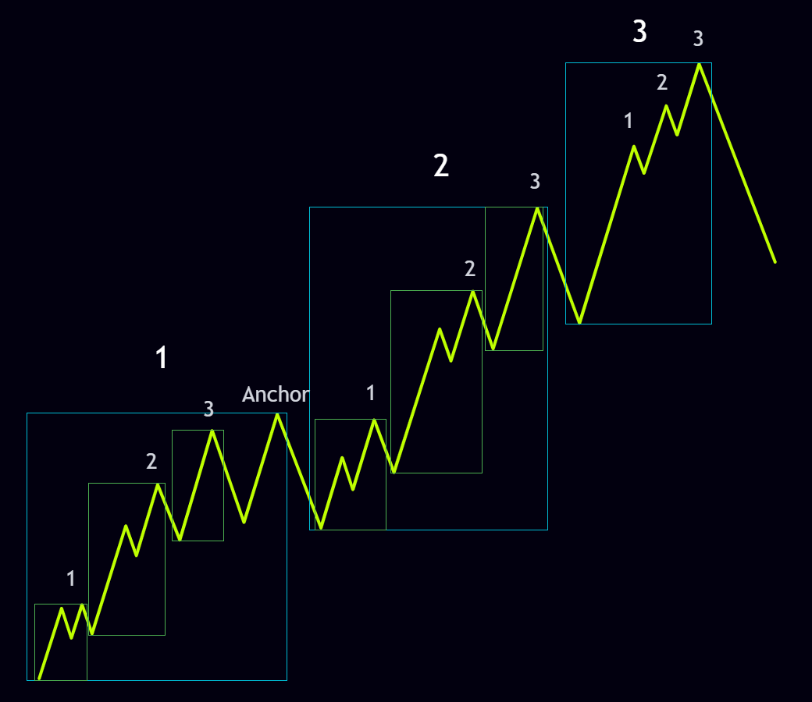
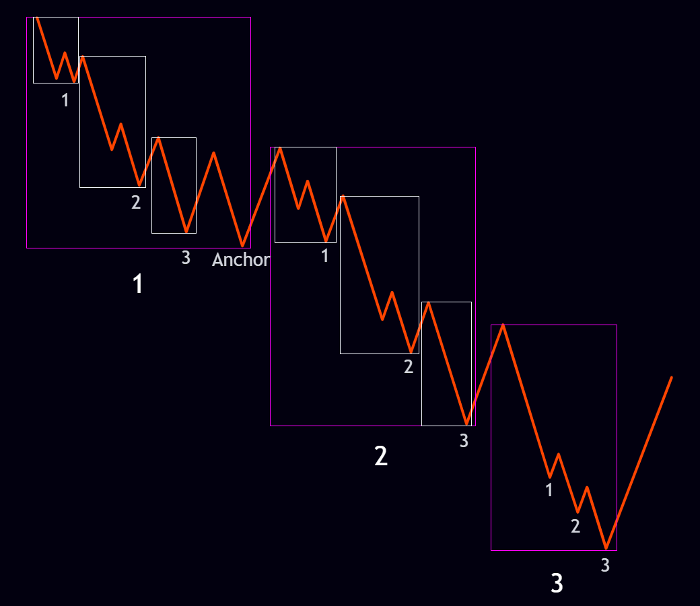
Understanding how an Anchor turns into Node 3 removes the confusion in counting; instead of thinking the structure is broken, you can analyze it inside the existing rules and keep the count correct.
Common Errors in Node Counting
Many traders who are new to the N2N strategy make the same mistakes, which prevents them from reading market structure correctly. Some of the most frequent errors are:
- Counting too early: treating a node as finished before its internal structure is complete.
- Ignoring the left side of the chart: counting only the live (right-side) market and paying no attention to the left side, its Pending 1-2s, and open targets.
- Forcing structure: trying to impose a structure on the chart when the market has not yet completed it.
- Constantly changing the count: altering the entire count with every small move instead of waiting for confirmation.
- Misidentifying Node 1: if Node 1 is wrong, the entire subsequent count is almost certainly wrong.
- Ignoring the higher timeframe: the higher timeframe (or higher fractal) sets the main direction; ignoring it can throw the whole count off.